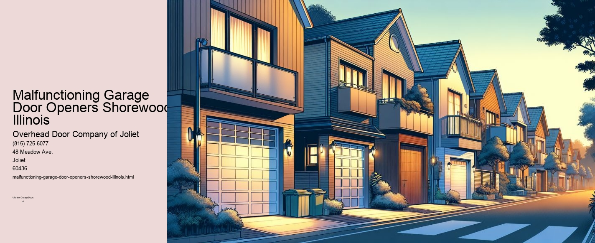

This article needs additional citations for verification. (September 2021) |

Troubleshooting Malfunctioning Garage Door Openers in Shorewood, Illinois
Nestled in the heartland of America, Shorewood, Illinois, is a serene suburb known for its charming neighborhoods and welcoming community spirit. However, like many suburban areas, Shorewood residents often encounter common household issues, one of which is malfunctioning garage door openers. While it may seem like a minor inconvenience, a faulty garage door opener can disrupt daily routines and pose security concerns. This essay delves into the common causes of these malfunctions, offers troubleshooting tips, and highlights why addressing these issues is crucial for Shorewood homeowners.
Garage door openers are essential components of modern homes, offering convenience and security. However, they can occasionally malfunction due to various reasons.
Another common issue is mechanical wear and tear. Over time, the components of a garage door opener, such as gears, springs, and belts, may deteriorate due to regular usage. This is especially true in Shorewood, where temperature fluctuations between seasons can exacerbate the wear on these components.
Misaligned sensors are another frequent culprit of malfunctioning garage door openers. These sensors, located near the bottom of the garage door tracks, are designed to prevent the door from closing if an object is detected in its path. However, if they become misaligned or obstructed by dirt and debris, they may prevent the door from closing altogether.
Given these potential issues, it is vital for Shorewood residents to know how to troubleshoot their garage door openers. Firstly, checking the power supply and ensuring that the opener is properly plugged in and receiving electricity is a straightforward step. If a power surge is suspected, resetting the opener or checking the circuit breaker may resolve the issue.
For mechanical problems, inspecting the hardware for signs of wear or damage is advisable. Lubricating moving parts like rollers and tracks with a silicone-based lubricant can also enhance performance and prevent future malfunctions. If the problem lies with the sensors, cleaning them with a soft cloth and ensuring they are aligned correctly can often solve the issue.
While DIY troubleshooting can resolve minor problems, some situations may require professional intervention. Complex electrical issues or significant mechanical failures should be addressed by a certified technician to ensure safe and effective repairs. In Shorewood, several local businesses specialize in garage door maintenance and repairs, providing residents with reliable support.
Addressing garage door opener malfunctions is crucial not only for convenience but also for security. A malfunctioning garage door can leave a home vulnerable to intruders or result in accidental injuries. Moreover, the garage often serves as a secondary entry point to the home, making its security paramount.
In conclusion, while Shorewood, Illinois, offers a peaceful suburban lifestyle, residents must remain vigilant about maintaining their garage door openers. Understanding the common causes of malfunctions and knowing how to troubleshoot them can save homeowners time and money while ensuring their homes remain safe and secure. By keeping these devices in good working order, Shorewood residents can enjoy the convenience and peace of mind that a reliable garage door opener provides.
Broken Springs and Cables Shorewood, Illinois
This article needs additional citations for verification. (September 2021) |